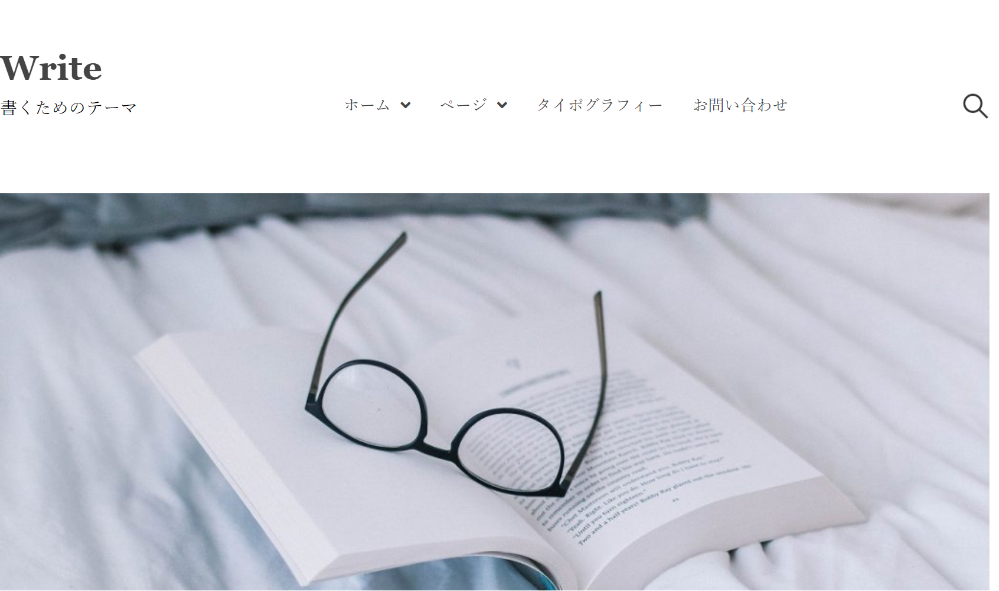
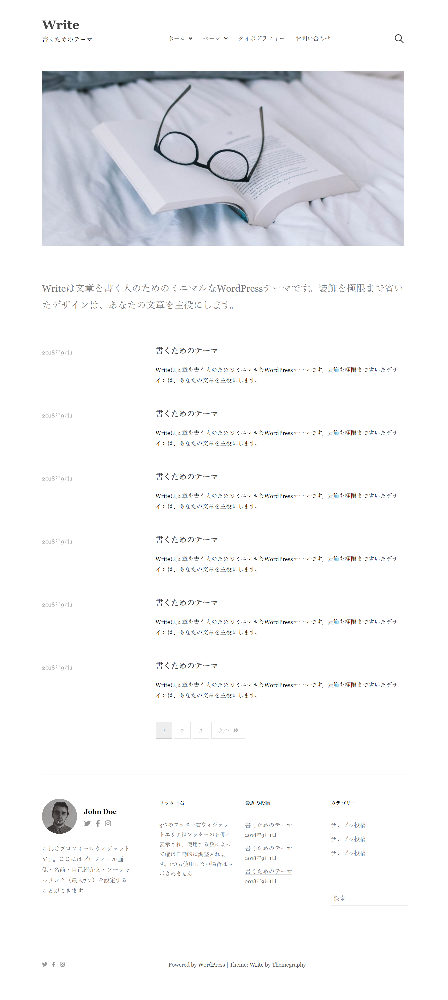

自己紹介
坂口 大地(Sakaguchi Daichi)
1997年4月15日生まれ(23歳)
趣味:ゴルフ
最終学歴: 横浜国立大学 理工学部 建築都市・環境系学科 地球生態学EP卒業
三重県四日市市で高校卒業まで生まれ育ち、大学4年間は横浜で生態学について学んだ。
新卒で証券会社に入社し日々の業務に取り組んでいたが、やりがいを感じられず入社半年で早期退職。
その後、自分の手に職をつける為にプログラミング学習を2020年11月末から独学で開始。
スキル
HTML5

CSS3

JavaScript

上記のHTML,CSS,JavaSciript(jQuery)を用いた簡単なコーディングは可能です。
Scss,Bootstrap,レスポンシブ対応も簡単な活用は可能です。
技術について独学でしか学んでいないので不安が多いですが
目の前のことに積極的に取り組み最大限努力致します。
作品

Write模写

PAS-POL模写


連絡先
TEL: 090-5007-6737
email: jhonsan.0202@gmail.com